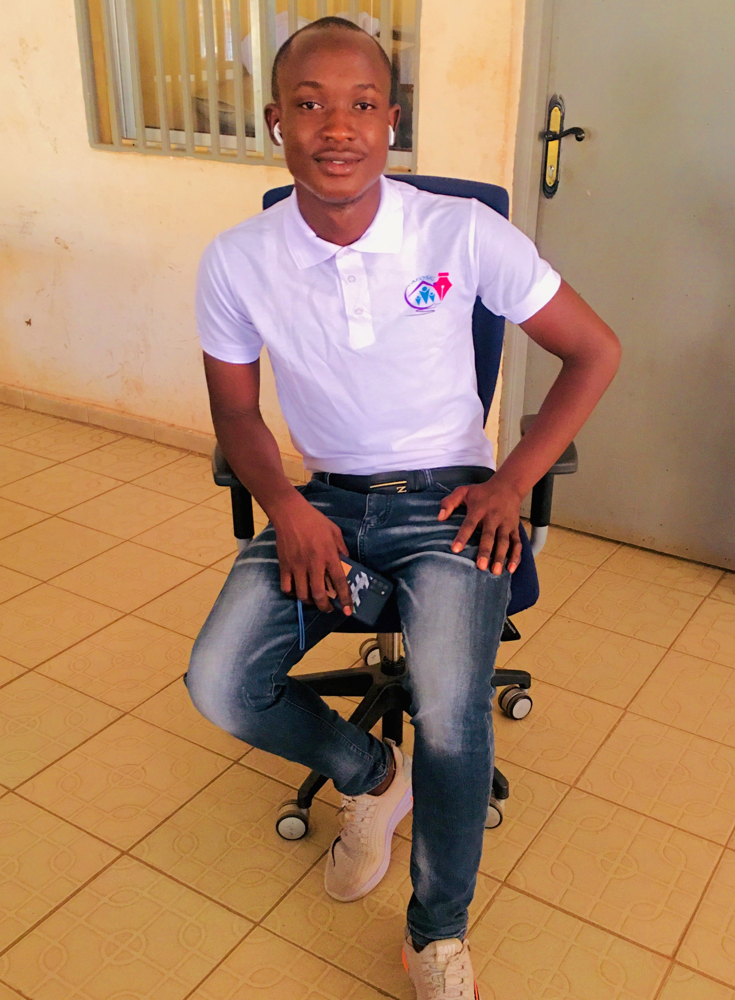

Salut!!
Je Suis administrateur
financier à Elista
Pour tout besoin,
dans le domaine de
la finance, contactez!
Projet
my blog

A propos de Moi
Ma tache consiste à coordonner et superviser
la comptabilité, la gestion des fonds et la trésorerie
Appelation:....CAMARA Sekou
Naissance :....19/07/1999
Adresse :......5-MkR, C13
Code-Zip :....9170
Email :........camarass1999@gmail.com
Telephone :....+7-999-670-20-45
120 Projets realisés